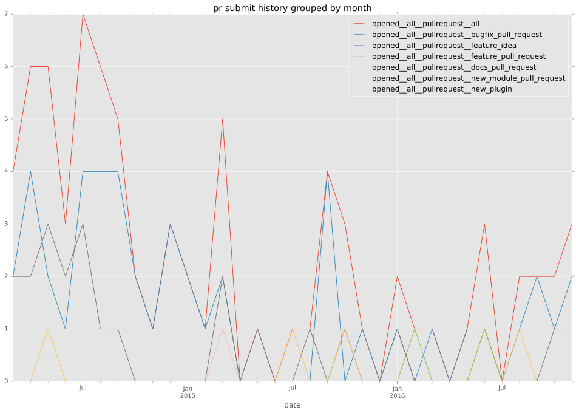

total issue counts
unknown: 2
bugfix pull request: 56
docs report: 2
pullrequest: 90
docs pull request: 5
feature pull request: 26
feature idea: 10
issue: 52
new plugin: 1
bug report: 40
issue history

pullrequest history



days open by issue type
feature pull request
count: 31
std: 83.2757306292
min: 0
max: 338
median: 12.0
mean: 50.7741935484
all
count: 153
std: 92.1074191354
min: 0
max: 581
median: 5.0
mean: 46.5359477124
pullrequest
count: 0
std: nan
min: nan
max: nan
median: nan
mean: nan
docs pull request
count: 8
std: 48.5899386999
min: 2
max: 145
median: 19.0
mean: 35.125
docs report
count: 2
std: 8.48528137424
min: 25
max: 37
median: 31.0
mean: 31.0
bugfix pull request
count: 76
std: 61.7680778282
min: 0
max: 253
median: 1.0
mean: 27.8947368421
feature idea
count: 6
std: 211.499408983
min: 10
max: 581
median: 334.0
mean: 303.0
issue
count: 0
std: nan
min: nan
max: nan
median: nan
mean: nan
new plugin
count: 2
std: 0.0
min: 71
max: 71
median: 71.0
mean: 71.0
bug report
count: 26
std: 71.0295821363
min: 0
max: 318
median: 13.5
mean: 43.1923076923
closures grouped by total days open